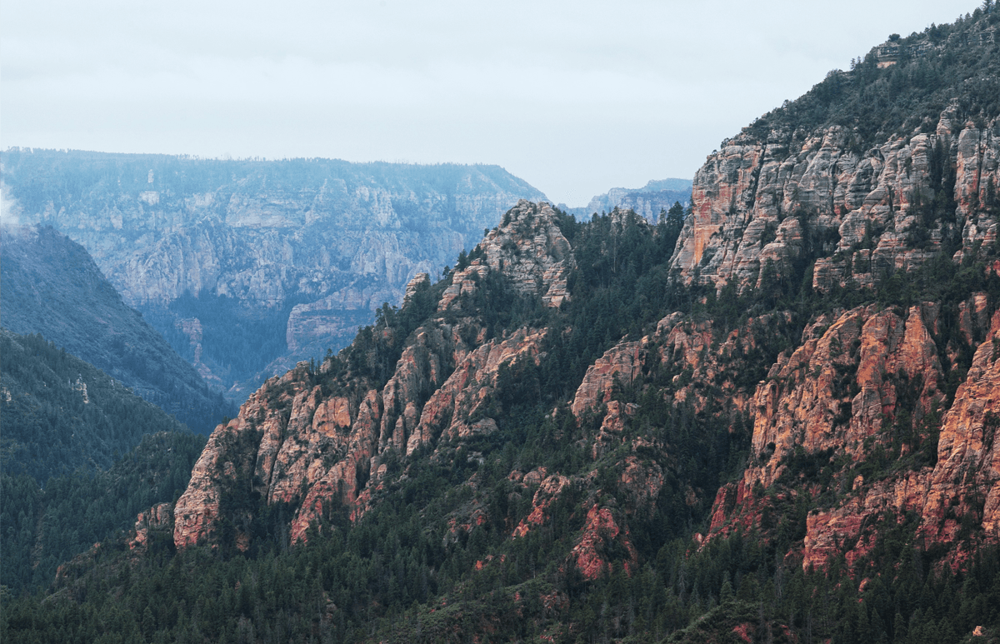

Седона
Добро пожаловать!



О нас
Седона - небольшой городок в Аризоне,заслуживающий большего!
Рассмотрим 5 причин, по которым Седона круче, чем Гранд каньон
Преимущества
Настоящий городок
-№1-Седона - не аттракцион для туристов,
там течёт своя жизнь

-
Жильё
Рекомендуем пожить в настоящем
мотеле, всё как в кино! -
Еда
Всегда заказывайте фирменный бургер,
вы не разочаруетесь! -
Сувениры
Не только китайского, но и местного
производства!

Там есть
мост дьявола
-№2-
Да, по нему можно пройти! Если конечно вы осмелитесь
-
Небольшая
-№3-
площадьВсе достопримечательности
находятся очень близко -
Красивая
-№4-
дорогаЕхать в Седону из Лас-Вегаса совсем
не скучно! -
Мало
-№5-
туристовБольшинство едет в Гранд Каньон
и толпится там
Укажите предполагаемые даты поездки,
и мы покажем вам лучшие предложения
гостиниц в Седоне
Поиск гостиницы в Седоне
Контактная информация